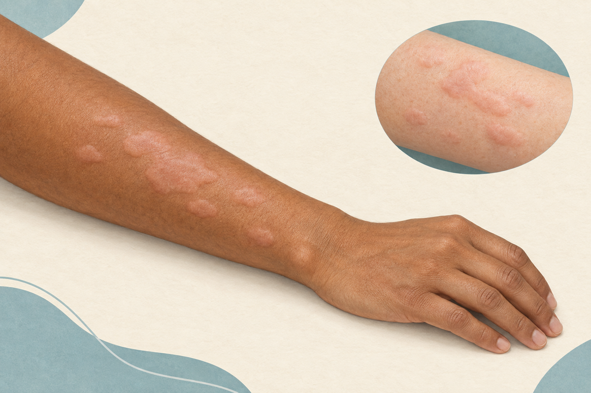

Hives Treatment in Adults: The 24-Hour Wheal and 6-Week Rule
How to calm uncomplicated hives, choose an antihistamine, and recognize when a rash needs more than home care. Updated for the 2026 international guideline.

What is the first treatment for acute hives in adults?
Key Takeaways
- A wheal usually fades within 24 hours; new crops can continue for longer.[1][3][4]
- Standard-dose second-generation antihistamines are first-line treatment for uncomplicated hives.[1][2][4]
- Cetirizine can cause drowsiness. Fexofenadine has specific fruit-juice and antacid instructions.[8][9]
- Do not copy chronic-urticaria high-dose regimens into self-treatment of a new rash.[1][8][9]
- Prednisone is not a routine requirement; benefits and harms depend on the situation.[1][5][6]
- Airway symptoms, faintness, or severe systemic symptoms require emergency care, not more antihistamine.[7][8][9]
- Hives recurring beyond 6 weeks need reassessment and a continuity-of-care plan.[1][3][4]
What do hives look and feel like?
Hives, also called urticaria, are raised, itchy patches called wheals. Their size and shape change, and several can join into a larger patch. A useful clue is movement: one spot fades while another appears elsewhere. An individual wheal usually leaves normal-looking skin within 24 hours rather than remaining fixed for days.[1][3][4]
Angioedema is deeper swelling, often around the eyelids or lips. It can accompany hives, but swelling without itchy wheals has other possible causes and deserves its own assessment. Tongue or throat swelling is not a home-treatment situation.[1][4][7]
On a small screen, swipe across the table for all columns.
| Feature | More consistent with ordinary hives | Reason to seek assessment |
|---|---|---|
| Duration of one spot | Fades within 24 hours | Same spot remains longer than 24 hours |
| Sensation | Mostly itchy | Pain, marked burning, or tenderness |
| After it fades | Skin returns to normal | Bruising or unusual discoloration |
| Other findings | Raised wheals without skin breakdown | Blisters, peeling, fever, or mouth sores |
These are clues, not a diagnosis from a photograph. A persistent, painful, bruised, or blistering eruption may not be ordinary urticaria.[1][4][8][9]
What causes hives in adults?
Infections and episodes with no clear trigger
A recent respiratory infection can precede hives. In many new episodes, no single trigger is found. That uncertainty does not automatically mean a hidden food allergy, and it is not a reason to start an extensive elimination diet.[1][4][10]
Foods, medicines, and stings
Foods, medicines, and insect stings can cause allergic hives. A reproducible reaction after a particular exposure matters more than a long list of foods eaten that week. Tell the clinician about new prescriptions, antibiotics, supplements, and nonprescription pain relievers, including ibuprofen and naproxen. Do not deliberately re-expose yourself to a suspected trigger.[1][4][7]
Heat, pressure, and other physical triggers
Heat, sweating, pressure, cold, and scratching can provoke wheals in some people. Repeated reactions to a predictable physical stimulus may indicate inducible urticaria, rather than a simple one-time episode. Describe the pattern instead of testing the trigger yourself, especially if it has caused swelling or other symptoms.[1][4][12]
Can stress cause hives, and why do they happen at night?
Stress can aggravate hives, and itching can create more stress in return. Heat, sweating, friction, and tight clothing can also make symptoms harder to manage. A nighttime pattern by itself does not establish the cause, and “stress hives” should not become a catch-all diagnosis that delays evaluation of a medication reaction or another rash.[1][11][12]
Keep a short record of when the rash appears, how long each spot lasts, new medicines, recent illness, heat or exercise, and other symptoms. Use a comfortably cool bedroom and loose clothing. Do not take a sedating antihistamine simply as a sleep aid or assume that sleepiness means stronger treatment.[2][11][12]
How long do hives last? The 24-hour and 6-week rules
Two separate clocks matter. One wheal usually fades within 24 hours, but a crop of new wheals can keep the overall episode going for days or weeks. The 2026 international guideline calls an episode lasting up to 6 weeks acute urticaria; recurrence beyond 6 weeks falls into the chronic category. These definitions do not mean you should wait 6 weeks before asking for help.[1][3][4]
Both US hives products compared below advise stopping use and asking a doctor if symptoms do not improve after 3 days of treatment or if hives have lasted more than 6 weeks. Get help sooner if symptoms worsen, the diagnosis is uncertain, or warning signs develop.[8][9]
When should you go to the ER for hives?
Call 911 if hives occur with trouble breathing or wheezing, throat tightness, tongue or mouth swelling, trouble swallowing or speaking, fainting, or severe dizziness. Hives plus repeated vomiting or severe crampy abdominal pain after a likely allergen can also signal anaphylaxis. Use your prescribed epinephrine device according to your emergency plan and call for help; do not wait to see whether an antihistamine works.[7][8][9][12]
Antihistamines may ease itch, but they do not treat the dangerous airway or circulation problems of anaphylaxis. Prednisone is not a substitute either. Anaphylaxis can occur without a rash, and a rash that looks modest can still accompany a serious reaction.[7][8][9]
On a small screen, swipe across the table for all columns.
| Situation | Next step | Why |
|---|---|---|
| Breathing or swallowing difficulty, throat/tongue swelling, faintness, or hives with severe systemic symptoms | Call 911; use prescribed epinephrine | Possible anaphylaxis needs emergency assessment |
| New or increasing facial/lip swelling, even with normal breathing | Prompt in-person assessment; call 911 if rapid progression or airway symptoms | Swelling may progress and can be difficult to judge by video |
| Itchy wheals only, otherwise well | Clinician or pharmacist advice and label-directed treatment may be reasonable | First rule out warning signs and medication risks |
| Fixed, painful, bruised or blistering spots; fever or skin peeling | In-person assessment rather than treating as routine hives | Another diagnosis may be present |
The table is a conservative triage aid, not a validated scoring system. Emergency symptoms override the duration or extent of the rash.[1][3][7][8][9]
How do you get rid of hives safely?
What can I do today for uncomplicated hives?
First, check the emergency signs above. For an adult who has only itchy wheals and otherwise feels well, the usual first medicine is one second-generation H1 antihistamine at its standard labeled dose. Cetirizine and fexofenadine are common examples. They block histamine signaling and can reduce itching and wheals; they do not guarantee that no new wheals will appear.[1][2][4]
Use a cool, damp cloth if cooling does not trigger your rash, avoid overheating, and wear loose clothing. If a medicine or food is a plausible trigger, discuss it rather than repeatedly testing your reaction. A first episode or an unknown cause deserves medical advice, as the OTC hives labels also recommend.[8][9][11][12]
Do not exceed package doses or combine multiple antihistamines on your own. The guideline's recommendation to increase a second-generation antihistamine up to fourfold is for chronic urticaria under a treatment plan, not a routine instruction for a new rash.[1][8][9]
What is the best antihistamine for hives?
There is no single best medicine for every adult. The 2026 guideline recommends a second-generation H1 antihistamine first, while choice depends on tolerability, other medicines, medical conditions, and response. Newer agents are generally preferred over diphenhydramine because of their safety profile, not because the word “non-drowsy” guarantees zero impairment.[1][2][4]
On a small screen, swipe across the table for all columns.
| Medicine | Labeled adult directions | Main precautions |
|---|---|---|
| Cetirizine (Zyrtec Hives)[8] | 10 mg once daily; no more than 10 mg in 24 hours. The label notes that a 5 mg product may suit milder symptoms. | Drowsiness can occur. Avoid alcohol; use caution driving. Ask before use with liver/kidney disease, sedatives, or at age 65+. |
| Fexofenadine (Allegra Hives 24HR)[9] | 180 mg with water once daily; no more than one tablet in 24 hours. | Do not take with fruit juice or at the same time as aluminum/magnesium antacids. Ask before use with kidney disease or at age 65+. |
These are directions for the specific US products cited, not a personal prescription or a recommendation to use both. Pregnancy, breastfeeding, kidney or liver disease, older age, and other medicines can change the choice. Ask a clinician or pharmacist rather than borrowing someone else's dose.[8][9]
Does Zyrtec help hives?
Cetirizine is a second-generation antihistamine used for urticaria. The US Zyrtec Hives label covers temporary relief of hives-related itching. It can still make you drowsy, especially with alcohol, tranquilizers, or sedatives. Do not drive until you know how you respond.[1][2][8]
More is not automatically better. Follow the label unless a clinician has given you an individualized plan. If symptoms are not improving after 3 days, the label says to stop use and ask a doctor; new breathing, swallowing, or faintness symptoms require emergency care immediately, not a larger antihistamine dose.[8]
Does Benadryl help hives, and why is it not the default?
Diphenhydramine, sold as Benadryl in the US, can relieve itch but is a first-generation antihistamine. It can cause sedation, dry mouth, dizziness, and impaired attention. Modern guidelines and the Canadian allergy society's safety statement favor newer antihistamines for routine urticaria management.[1][2][4]
Avoid choosing diphenhydramine simply because it makes you sleepy or assuming it is a better emergency medicine. It is not a replacement for epinephrine in anaphylaxis. If you already took it, check with a pharmacist before adding another antihistamine or a multi-symptom cold or sleep product.[2][7][8][9]
Do you need prednisone for hives?
Not routinely. In a randomized trial of 100 adults with acute urticaria, adding prednisone to levocetirizine did not improve the overall symptomatic response compared with levocetirizine alone. The trial's conclusion concerns uncomplicated acute hives without angioedema and should not be treated as a study of anaphylaxis.[5]
The broader evidence is more mixed. A 2024 systematic review of 12 trials involving 944 patients combined acute urticaria and chronic-urticaria flares. It found that added systemic steroids can improve symptoms in some circumstances, depending on expected response to antihistamines, but also increase adverse effects. Those pooled results do not establish that every adult with a new episode benefits.[6]
The 2026 guideline allows consideration of a short oral rescue course in selected situations, while discouraging long-term systemic steroids. A clinician should weigh severity, response, comorbidities, and harms. This guide deliberately does not provide a self-start prednisone regimen or a chronic-urticaria escalation plan.[1][5][6]
What home care helps, and what should you avoid?
Comfort measures include loose clothing, warm rather than hot showers, gentle washing, and avoiding rubbing or scratching. A cool cloth can help if cold itself does not trigger the rash. These steps are for comfort; they are not proven substitutes for antihistamines or emergency treatment.[11][12]
Avoid broad “detox” diets, supplement stacks, or deliberate exposure tests as a way to identify the cause. A focused history is more useful than guessing from a long food list. Do not stop a medically necessary prescription such as aspirin without prompt advice from its prescriber; suspected medication reactions require an individualized plan.[1][4][10]
Topical products may soothe itch, but oral antihistamines remain the main treatment for ordinary hives. Do not assume a steroid cream will prevent new wheals or treat deeper swelling. Ask about an unusual, non-itchy, bruised, or blistering rash before applying more products.[1][3][8][9]
Do you need allergy tests or blood tests?
Usually not for a straightforward, short-lived episode. The 2026 guideline recommends against routine diagnostic testing in acute spontaneous urticaria unless the history points to a cause. A clinician may investigate a suspected food or drug allergy, an atypical rash, or another illness, rather than ordering a broad panel for every patient.[1][4][10]
Bring time-stamped photos, the names and doses of medicines you took, a list of new exposures, and a description of associated symptoms. A picture of one spot before and after it fades helps distinguish fleeting wheals from a fixed rash. Never perform a food, medicine, cold-water, or exercise challenge on your own after a possible allergic reaction.[1][3][7][11]
When do recurring hives need a different plan?
Seek reassessment if treatment is not working, swelling develops, or individual spots stop behaving like ordinary wheals. Hives recurring beyond 6 weeks require a chronic-urticaria assessment; an allergist or dermatologist may be appropriate. That is a different care pathway from repeated same-day visits for rescue prescriptions.[1][3][4][8][9]
Can telehealth assess hives, or should you be seen in person?
A stable adult with itchy, transient wheals and no warning signs may begin with a video consultation or an in-person primary-care visit. Photos, symptom timing, and medication history can support the discussion, but a remote visit cannot reliably assess every rash, airway problem, or vital-sign change. This is a care-routing recommendation, not a claim that video and in-person examination are interchangeable.
Choose in-person assessment for uncertain or atypical lesions, new or progressive swelling, systemic symptoms, or poor response to treatment. Use emergency services for the red flags above. Persistent or recurrent disease needs continuity with primary care and, when indicated, allergy or dermatology rather than indefinite acute-care management.[1][3][7][8][9]
Related reading: epinephrine auto-injectors, contact dermatitis, and skin-condition triage with photos.
Frequently Asked Questions
Get advice for an unknown cause or uncertain diagnosis, worsening symptoms, swelling, bruised or blistering lesions, or a fixed spot lasting more than 24 hours. The cited US OTC hives labels advise stopping use and asking a doctor if symptoms do not improve after 3 treatment days or hives last more than 6 weeks.[1][8][9]
References
- Zuberbier T, Ansari ZA, Abdul Latiff AH, et al. The International Guideline for the Definition, Classification, Diagnosis and Management of Urticaria. Allergy. 2026;81(8):2582-2632. doi: 10.1111/all.70210. https://pubmed.ncbi.nlm.nih.gov/41649409/
- Fein MN, Fischer DA, O'Keefe AW, Sussman GL. CSACI position statement: Newer generation H1-antihistamines are safer than first-generation H1-antihistamines and should be the first-line antihistamines for the treatment of allergic rhinitis and urticaria. Allergy Asthma Clin Immunol. 2019;15:61. doi: 10.1186/s13223-019-0375-9. https://pubmed.ncbi.nlm.nih.gov/31582993/
- American Academy of Dermatology. Hives: Diagnosis and treatment. Accessed September 24, 2026. https://www.aad.org/public/diseases/a-z/hives-treatment
- American Academy of Allergy, Asthma & Immunology. Hives (Urticaria) and Angioedema Overview. Updated June 18, 2026. https://www.aaaai.org/tools-for-the-public/conditions-library/allergies/hives-(urticaria)-and-angioedema-overview
- Barniol C, Dehours E, Mallet J, et al. Levocetirizine and Prednisone Are Not Superior to Levocetirizine Alone for the Treatment of Acute Urticaria: A Randomized Double-Blind Clinical Trial. Ann Emerg Med. 2018;71(1):125-131.e1. doi: 10.1016/j.annemergmed.2017.03.006. https://pubmed.ncbi.nlm.nih.gov/28476259/
- Chu X, Wang J, Ologundudu L, et al. Efficacy and Safety of Systemic Corticosteroids for Urticaria: A Systematic Review and Meta-Analysis of Randomized Clinical Trials. J Allergy Clin Immunol Pract. 2024;12(7):1879-1889.e8. doi: 10.1016/j.jaip.2024.04.016. https://pubmed.ncbi.nlm.nih.gov/38642709/
- Cardona V, Ansotegui IJ, Ebisawa M, et al. World allergy organization anaphylaxis guidance 2020. World Allergy Organ J. 2020;13(10):100472. doi: 10.1016/j.waojou.2020.100472. https://pubmed.ncbi.nlm.nih.gov/33204386/
- DailyMed. ZYRTEC HIVES: cetirizine hydrochloride 10 mg tablet, Drug Facts. Accessed September 24, 2026. https://dailymed.nlm.nih.gov/dailymed/drugInfo.cfm?setid=31136e3a-94fa-0860-e063-6394a90a008d
- DailyMed. ALLEGRA HIVES 24HR: fexofenadine hydrochloride 180 mg tablet, Drug Facts. Accessed September 24, 2026. https://dailymed.nlm.nih.gov/dailymed/drugInfo.cfm?setid=490b4c5f-448b-4563-928b-837117b59b9f
- Macy E. Practical Management of New-Onset Urticaria and Angioedema Presenting in Primary Care, Urgent Care, and the Emergency Department. Perm J. 2021. doi: 10.7812/TPP/21.058. https://pubmed.ncbi.nlm.nih.gov/35348101/
- American Academy of Dermatology. Hives: How to get relief at home. Accessed September 24, 2026. https://www.aad.org/public/diseases/a-z/hives-self-care
- American Academy of Allergy, Asthma & Immunology. Acute Hives versus Chronic Hives. Updated June 18, 2026. https://www.aaaai.org/tools-for-the-public/conditions-library/allergies/acute-hives-versus-chronic-hives
Evidence reviewed September 24, 2026. Older studies are retained where relevant and interpreted alongside the 2026 guideline. US product-label directions are product-specific, not individualized prescribing advice.
This health guides library is published for educational purposes only. It does not constitute medical advice and is not a substitute for evaluation by a licensed clinician. Always consult a qualified healthcare provider about any medical concern. All articles are reviewed by Parth Bhavsar, MD, and cite peer-reviewed sources where possible.